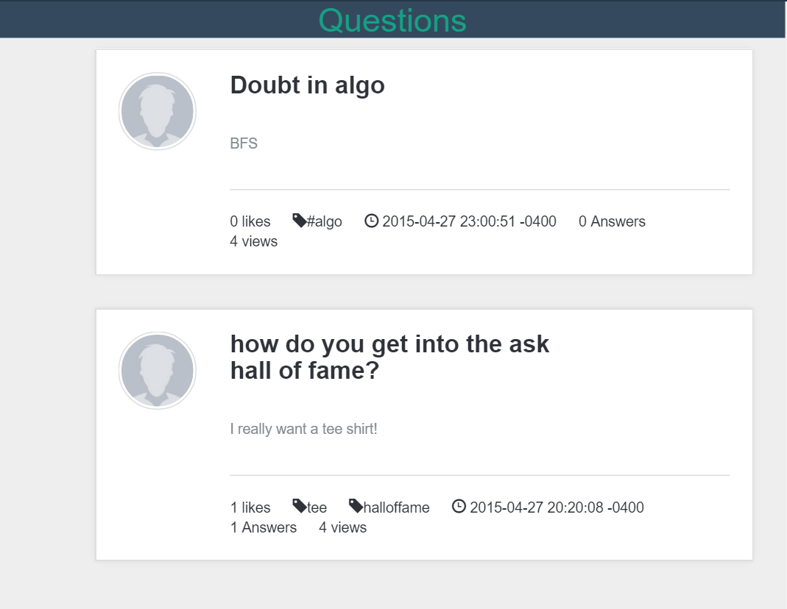
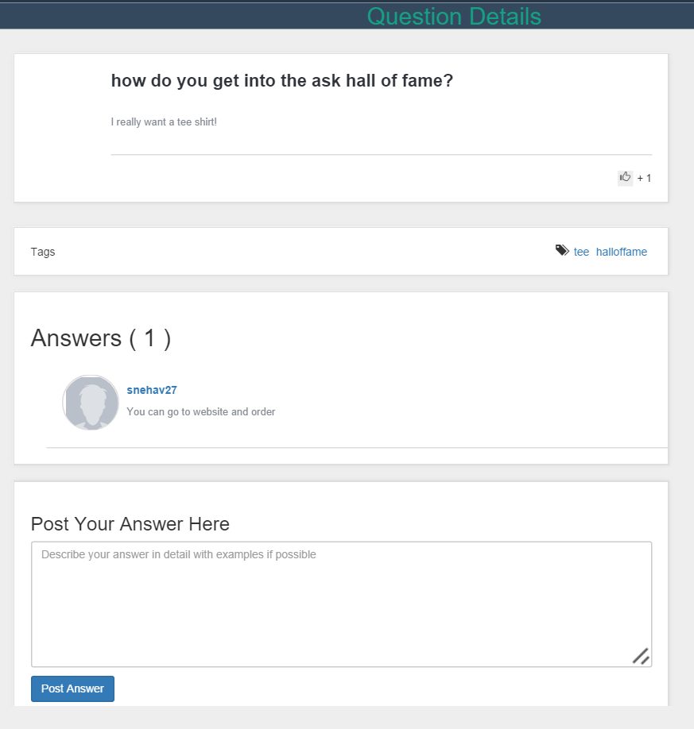
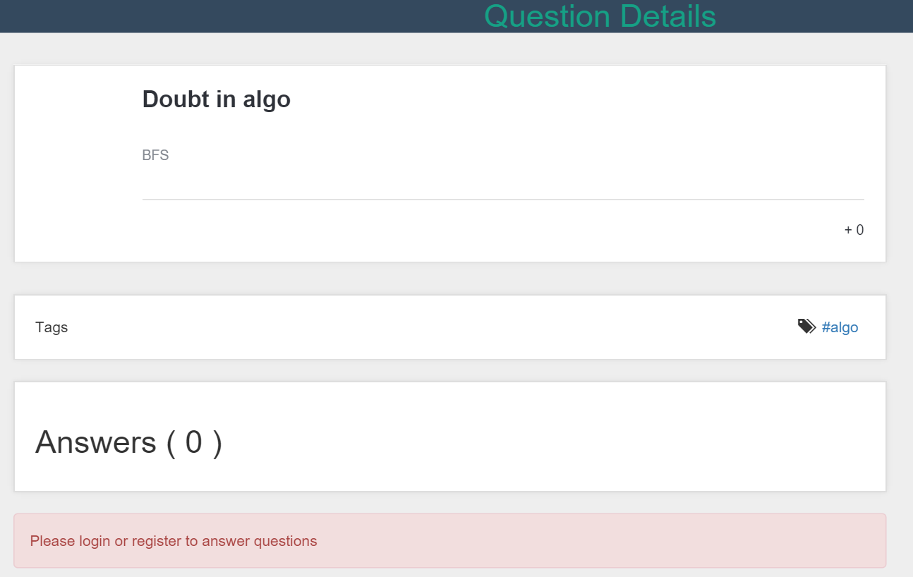

Project : Questions Page
The Questions page has follwing sub pages
- All Questions : Display all the questions in database
- Question Details : Display details of a particular question selected
All Questions Snapshot:

Question Deatails Snapshot(when logged in):

Question Deatails Snapshot(when logged out):

Question Services
Following services are used in the Questions pages.
- View Questions Service to view all questions.
- QuestionDetails Service to view all the details of a particular question.
- If Logged in, SaveAnswer service is used to save a response.
Next Page